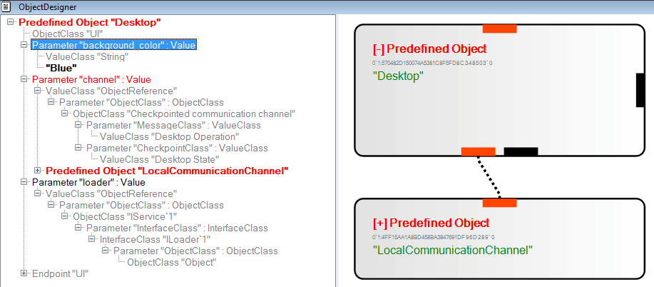

Understanding Live Objects
Definitions
Working with Live Objects
Running Objects
Understanding the Internal Structure of Live Object References
Analyzing Objects with an Object Designer
Modifying Existing Objects with the
Object Designer
Creating New Objects from Scratch with
the Object Designer
A live object is a single instance of a distributed protocol running on some set of machines, and the live object's protocol is the protocol itself, i.e. a set of instructions that prescribes what each of the machines on which the object runs should do. The instructions may involve sending packets across the network, or interacting with the user, other applications or the operating system. The instructions either take the form of, or can be compiled down to executable code. An instance of such code running on a particular machine is called a live object's proxy. Each live object is thus executed by a set of its proxies that follow its protocol. To run a live object, a machine must have the description of its protocol. A description of a protocol expressed in a standard, uniform manner prescribed by the live objects runtime is called a live object reference. Any machine that has a live object reference can extract the protocol description from it, and can instantiate the proxy that will run locally on the machine. We will refer to this process as dereferencing a live object's reference. To deploy a live object, it is thus sufficient to create a reference and distribute it to all machines on which the object needs to run.
A live object class determines the way a live object interacts with the external world. The class defines a number of endpoints, which represent event channels. Each proxy of the object maintains a copy of each endpoint defined by the object's class, and uses it to communicate with the proxies of other objects. The endpoints come in different flavors. An endpoint class determines the types of events that an object can send or receive through an endpoint of this class, and may place additional constraints on these events, e.g. in terms of their temporal patterns. Object classes and endpoint classes can be thought of as typed contracts, an equivalent of interfaces in an object-oriented programming language.
The above description is very brief, and will undoubtedly leave the reader confused. We encourage the reader to skim over the first few pages of the following paper to develop better intuition. The paper is easy to follow, and has a number of examples, and there is perhaps not much point duplicating its contents.
Programming
with Live Distributed Objects.
Krzysztof Ostrowski, Ken Birman, Danny Dolev, Jong Hoon Ahnn.
In submission (December, 2007).
Before you read the tutorial, you may watch this short video that illustrates the sequence of actions we will walk you through.
As explained in the preceding section, a live object runs when a set of machines uses its reference to create proxies that will execute the object's protocol. In our platform, object references are encoded in the XML format, in files with the ".liveobject" extension. We have created a file association for the ".liveobject" extension, so that in order to launch a live object proxy, it is enough to double-click a ".liveobject" file containing the object's reference or type in the file name in Command Prompt and press ENTER, as shown below:
Either way, double-clicking a ".liveobject" file or executing it in a shell is merely a shortcut for invoking "\bin\liveobejcts.exe", the live objects runtime, with the .liveobject file passed as an argument to it. Hence, the command above is equivalent to executing "C:\liveobjects\bin\liveobjects.exe C:\liveobjects\examples\channels_server.liveobject". Indeed, if you open Process Explorer to see the list of running processes, and enable the command line display (in menu "View", "Select Columns", choose column "Command Line"), you will see a line corresponding to exactly this invocation (the selected process in the picture below).
Each live object started by executing a ".liveobject" file will start in a separate process, so if you start multiple objects this way, you will see multiple processes in the view above. For debugging purposes, it is sometimes useful to know which process corresponds to which object. You can find that out by right-clicking on the process in Process Explorer and selecting "Window", then "Bring To Front", as shown below. This will highlight the corresponding window.
As you may have noticed, each live object process has its own application window. If the object has a user interface, the interface will fill the window. If it doesn't, as it is the case with the object used in this example, the window will simply display the name and type of the object, with the object running in the background. Pressing the "OK" button will immediately terminate the object (the button name is perhaps somewhat misleading, and we will fix that at some point, unfortunately the built-in modal system dialogs we're using for this purpose do not offer an easy way to customize this).
In general, a single live objects runtime will host multiple objects in the same "liveobjects.exe" process. This is the case when one object spawns another. Both objects then run in the same address space and share the same threads and other resources. You will see this on an example of a virtual desktop, which we will discuss shortly.
As you may have noticed, objects started so far were running in the context of the interactive user (as the terminal services session number and the user name in the above screenshots indicates). There is another way to start live objects, by hosting them in a service process. During the installation, we create a service "Live Distributed Objects", by default stopped, and requiring manual start, either by using the "Services" tool from "Administrative Tools", as shown below, or by executing "net start "Live Distributed Objects"" from command prompt (note the single quotation marks surrounding the service name).

The service executes the exact same process "\bin\liveobjects.exe", only that it does so in a terminal services session 0 and under a Local System account (as you may verify in Process Explorer), it has no user interface, and does not have any arguments. When started in this mode, the runtime reads the contents of the folder "\services", and executes all objects in this folder. All objects run in the same process, share resources, and are executed with Local System credentials. This makes it possible to use certain types of resources, such as e.g. create global shared memory regions, but it also carries a security risk, so only trusted objects should run as services, and it is best to secure the contents of this folder against writing, e.g. by making it read-only.
By default, we deploy a single service, a server for a trivial implementation of multicast over TCP that can be used for debugging simple objects that don't require high performance. By default, multicast is configured to use this server, so if you start any of the examples we provided that involve multicast, they will expect the local server to be running. It is possible to configure the system to use a server on a different machine, or to use another multicast platform, such as QSM or your custom solution. We will discuss this in another section.
To conclude this section, try running a desktop example: start the "QuickSilver Live Objects service", and then double-click on the "shared_desktop_1.liveobject" file in the "\examples" folder. You should see a pair of "liveobject.exe" processes running, one under a Local System account, and one other a local user account.
By double-clicking the services process and selecting the "TCP/IP" tab, you can verify that a TCP connection has been established between the two, as shown below. When objects fail to work, it is a good idea to double-check that network connectivity is an issue. At the very least, you should make sure that the default port 60000 is open in the firewall, that "liveobjects.exe" has a right to open new incoming and outgoing connections.
Now, select "shared_text_1.liveobject", as shown below, and drag it inside the area of the desktop object, as shown below.
You will see a text object is embedded in the desktop, but as you can verify in Process Explorer, no new "liveobject.exe" processes are created. In this case, both live objects, the desktop and the text object, run in the same process. They will also share the same connection that links them to the local multicast server.
Understanding the Internal Structure of Live Object References
As already mentioned earlier, the ".liveobject" files are object references encoded in XML. While it is not necessary to edit these files by hand because we provide a visual designer for this purpose, it helps to understand how they are constructed. After opening one of these files, you will a structure similar to the following.
At the root level, there is always a "Root" element, inside which we expect an "<Object>" section containing an object definition. In this example, the element representing the object definition is of type "ReferenceObject", it has an identifier (the XML attribute "id"), a number of custom attributes (the "<Attribute>" elements in the "<Object>" element), and a few parameters (the "<Parameter>" elements). To make it clearer, we show the same XML below with the unnecessary details obscured.
There are two categories of object definitions: "ReferenceObject" definitions, which simply point to a definition stored elsewhere, and "CompositeObject" definitions, which explicitly describe how the object is constructed out of its constituent parts, which presumable are more primitive objects. We will refer to objects described in these two ways as "reference objects" and "composite objects", respectively. In this tutorial, we will focus on reference objects, because these are more common and seem to be more convenient to work with.
Reference objects come in three flavors. The first type is "predefined" objects, which we will also refer to as "library" objects. These are implemented in .NET libraries. Their code is either built into the live objects runtime, or is downloaded from elsewhere. The second type is "repository" objects. The definitions of these objects are stored inside other objects, which we will refer to as "repositories" or "folders", so to instantiate those objects, the respective repositories need to be contacted first. Finally, there are also "parameter" objects, which are used in the definitions of composite objects to refer to the objects passed as parameters. In this section, we won't talk about the latter. We'll focus on predefined objects and repository objects, since these two will be easiest to define and work with.
Both types of objects we'll talk about, the predefined and repository ones, must have an identifier, passed as an XML attribute "id".
In case of predefined objects, the identifier must have the following general form:
namespaceid`namespaceversion:componentid`componentversion
The "`" (back-apostrophe) and ":" (colon) symbols we highlighted are separators. The "libraryid" and "componentid" are 128-bit hexadecimal numbers identifying the namespace in which the object is defined, and the specific component within this namespace. The "namespaceversion" and "componentversion" are the respective version numbers, encoded as 64-bit decimal numbers. The "namespace" here will typically refer to a .NET library, but a single namespace may also span across several libraries. We are assuming that namespace numbers would be reserved through some global directory in order to avoid collisions, although for the time being, numbers generated at random, e.g. using the "Create GUID" tool under "Tools" in Visual Studio, should be sufficient. The component numbers within a particular namespace can be anything. We assume that namespace and components are always backwards-compatible, i.e. a library or a component with a higher version number can perfectly replace one with a lower version number in any context. Accordingly, when the live objects runtime encounters a reference to a component or library with version N, it may choose to provide a component or a library with version M > N. If backwards compatibility is impossible, one should simply generate new names.
Any of the four elements can be an empty string, in which case it is assumed to be "0". Namespace "0" is reserved for the runtime. Hence, identifier "C69D58A635524737981E4C8AB9279EDD" is a shortcut for "0`0:C69D58A635524737981E4C8AB9279EDD`0", which can be translated as "any version of the component named C69D58A635524737981E4C8AB9279EDD from any version of the live objects runtime". One can skip the namespace specification and any of the version numbers. Hence for example, "X:Y" would translate to "any version of component Y from namespace X", "X`Y" would translate to "version Y or higher of component X from the live objects runtime", "X:Y`Z" would translate to "version Z or higher of component Y from namespace X", and so on.
Objects defined in libraries can be parameterized, and the semantics of such objects is basically equivalent to templates in C++. The parameters can be type parameters, or concrete values. The values can, in particular, be references to other objects. The list of parameters is fixed for an object of a given type.
In this example, the predefined object named "C69D58A635524737981E4C8AB9279EDD", which represents a visualization of a simple moving object in a 3-dimensional space, has two parameters, "modelname" and "coordinates", shown in the expanded view below. The first is a simple string value that identifies a resource to be used as a texture to render, and the second is a reference to a live object that represents the stream of values encoding coordinates, velocity, orientation, and rotation in 3-dimensional space.
The object reference for the "coordinates" parameter is encoded again as an XML element of type "ReferenceObject". By now, you can see the recursive nature of these definitions: objects can take other objects as parameters, and the pattern can repeat in a cascading manner, much in the way function calls in an ordinary language can be nested.
The "coordinates" object has a typed parameter "ValueClass". The object is actually a generic template that represents a stream of values obtained from a communication channel. Parameter "ValueClass" specifies the type of values carried in the channel, and parameter "channel" is a specific channel from which these values are retrieved. The type of values in the channel is encoded as an XML element of type "ValueClass". This element resembles a "ReferenceObject" element. It has a single XML attribute "id", formatted in exactly the same way as the identifier of a predefined object, that uniquely points to a specific version of a concrete value type defined in a specific namespace, implemented in a .NET library. In this case, namespace specification is missing, which means the type is predefined by the live objects runtime.
Finally, let's look at the channel definition. Instead of a list of parameters, this object has a "<From>" element. This indicates that it is not a predefined object, but a repository object. The definition of this object is to be retrieved from another object, the "repository". The definition of the repository itself is embedded here, that's what the "from" element is for. The "id" attribute, in this case, can be anything, it is used simply as a key to the repository. The repository is assumed to implement one of the recognized "dictionary" interfaces through which the runtime can issue lookup requests and retrieve responses.
The last thing to note here is the <ObjectClass> element. This element specifies the class of the object that is expected to be retrieved from the repository. In this case, the class is again pre-defined, like it was the case for the type of values in the channel. Note that types can also have parameters. In this case, "806C71E88E749AA879E52F960F4B881" represents a generic type "communication channel" that can carry messages of type "MessageClass", and supports state transfer of type "CheckpointClass", where "MessageClass" and "CheckpointClass" are parameters to this template.
Analyzing Objects with an Object Designer
Before you read the tutorial, you may watch this short video that illustrates the sequence of actions we will walk you through.
The use of 128-bit identifiers makes the XML files obscure, but with high probability guarantees that the names will be unique, and keeps the size of the object definitions predictable, since each identifier is limited to 16 bytes, or 32 characters in an XML file. In practice, we don't expect the user to work with the XML files directly, hence we provide a visual designer. The designer is wrapped up as a live object (although at present, it does not support collaborative editing), and is started by executing "object_designer.liveobject" in the "examples" folder of the distribution. Start the designer and drag the file "plane_subscriber_00.liveobject" into the central area of the form that shows up. You should see something like the following.
On the left, you see the object definition displayed in the form of a tree view. You can expand parts of the tree by clicking on the "+" signs. After expanding parts of the tree, you might see something like the following.
The information displayed here is equivalent to that in the XML file, but the obscure 128-bit identifiers are resolved to actual objects and types, which are loaded from the respective libraries where necessary, and wherever the corresponding elements define human-readable names or descriptions, these are displayed instead of the identifiers. The full information about the object or type, including the identifier, can be obtained by moving the mouse over the corresponding element and inspecting the tooltip, as shown below.
In the middle, selected aspects of the object definition are visualized in the form of a diagram, in which rounded rectangles of the sort shown above represent individual objects. You can zoom in and out of the diagram by using the mouse wheel, move the diagram by pressing and holding the mouse button on any part of it, moving the mouse to shift the view, and releasing it. You can also expand or collapse details of the diagram by double-clicking on the objects. After expanding all elements of the diagram by double-clicking on them, you would see something like the following.
Clicking on a node on the tree or a part of the diagram highlights the corresponding element with a yellow background, both in the diagram as well as in the tree. In the picture shown above, a single object named "Subscriber" has been selected. Besides highlighting the object itself, the entire area corresponding to the definition of the selected object, including the parameters used to instantiate it from a template or a repository from which it is retrieved, is surrounded by a dotted line. You can see this in the above picture: the dotted line surrounds an area containing four objects with "Subscriber" at the top.
Selecting certain elements, besides highlighting them in yellow, also highlights other associated elements and connections with them in blue. For example, selecting a parameter also highlights the value assigned to this parameter. In the picture below, the object passed as a parameter "channel" to the "Subscriber" is highlighted this way.
Now, let us focus on the diagram. Each rounded rectangle representing an object has a number of rectangular shapes on its sides. We will refer to those as "ports". Pots on each side has a different purpose. The port at the top of the object represents the object itself. When the top port of an object X it is connected to a parameter port of object Y, it means that X is passed as a parameter to Y. The parameter ports are those at the bottom. In the diagram, only parameters that are object references are drawn. Parameters that are types or ordinary values are not present in the diagram, information about them can be found in the tree view on the left. The port on the left side of an object is present only in repository objects, and links the repository object to the repository from which it is retrieved. Finally, ports on the right represent the object's endpoints. In the section of the diagram shown below, the "Subscriber" object has a single parameter port that is connected to the top port representing the repository object "00000000000000000000000000000003". As a repository obejct, the latter has a port on the left linking it to the top port of another repository object. Each of the objects shown here has a single endpoint.
As it was the case with the tree view, the information about the parameters and endpoints is displayed in the tooltips when hovering over a portion of the diagram.
Modifying Existing Objects with the Object Designer
Once an object is loaded into the designer, parts of the object definition can be modified. The modifiable parts are displayed in a black font in the tree view. The grayed out portions represent parts of the object definition that are derived from other parts, or simply additional information, and cannot be directly modified. For example, the types of the object's endpoints are determined by the object's class, and the class of a predefined object is statically pre-determined by the definition stored in the library where the object is defined, hence these elements are grayed out. On the other hand, parameters and the "from" clauses are generally modifiable.
There are two ways to modify an element of the definition: by right-clicking on it and choosing "Change Value" from the context menu, or by dragging something onto it. The former is used to change simple values, such as numbers or strings, as shown below.
In the dialog that appears, we may specify the way the string is decoded. Most of the time, option "text" will be used, which invokes a method such as "Parse", a constructor with a String argument, or a similar method of the underlying data type, if one is found. For more complex values, the "xml" option that constructs the value from the provided XMLbe more adequate. The value is accepted after pressing ENTER. If the string is not recognized, it will be colored in red, and the window will stay modal until a correct value is entered.
Dragging and dropping is used to replace parts of the definition that represent types or object references. Object references can be dragged as a text e.g. from notepad, or as a files with the "liveobject" extension. All types of elements can also be dragged from a library of known objects and types. The latter is shown in a tree view on the right side of the editor window, which after expanding may look as on the picture below.
To test parameter replacement, expand the library node "objects", select object template "Text", dag it into the central window or the tree view, and drop it onto the parameter "coordinates" (the drop area will highlight as you move the mouse). You should see a new diagram, with some of the elements displayed in red.
The red color indicates that the definitions are incorrect. You can see the error details in the tooltip after hovering over the corresponding element. For example, hovering over the parameter "coordinates" should result display something that looks like the following.
In this case, the type of the parameter and the actual value assigned to that parameter do not match. You can verify that yourself by expanding the corresponding elements in the tree. First, after expanding the "ValueClass" element of the parameter, you should see something like the following.
This definition states that the type of the object that should be assigned to this parameter should be a stream of values of type "coordinates". However, as the "ObjectClass" element of the "Text" object indicates, this object is a UI component. By expanding the list of endpoints, you can verify that the UI object has differently named endpoints of different types than objects of type value stream, and therefore UI objects are not usable in the context in which value streams are expected, hence the type mismatch.
We leave it up to you to experiment with the object designer. If you manage to produce an object that type-checks correctly, and has no elements highlighted in red, you can select the object in the tree view, drag it back e.g. onto the desktop, and use it.
Creating New Objects from Scratch with the Object Designer
Before you read the tutorial, you may watch this short video that illustrates the sequence of actions we will walk you through.
To conclude this part of the tutorial, we will create an object from scratch by using template components from the library. To begin, open the designer window, expand the library view, and locate object "desktop" in the object list, then drag it onto the design sheet. The designer won't make the object as incorrect, even though it is a template object and none of the template arguments are set, because the object does not have any type parameters, and all non value parameters are by default assigned null. However, the object as it is won't run.
After expanding the parameters in the tree view, you should see something like the following.
We need to provide three parameters. The first is a background color, which you can set by using the "Change Value" option from the parameter context menu. Let's type in "Blue". The second is a communication channel. Find an object named "LocalCommunicationChannel" in the "objects" section of the library, and drag it onto the parameter. This is a mock communication channel that offers an empty checkpoint to start with and bounces all messages back. After expanding the object in the central window by double-clicking it, you should see something like the following.

The definitions are not correct. When you hover over the elements of the diagram or the nodes in the tree view marked in red, you will find that some of the parameters are not set. The local communication channel template has type parameters, and for those, there are no defaults, hence the error. Expand the channel object.
Now, inspect the parameter description. The information in the tree view tells us that the parameter is a value, and that the class of this value is an object reference. The object passed as a reference should be a "checkpointed communication channel", i.e. a channel that supports state transfer. As you can see, this type is parameterized by two value classes, the type of messages carried by the channel and the type of state that is transferred in the form of checkpoints.
First, let us set wrong values of the parameters, e.g. by dragging "Desktop Operation" value class from the library and dropping it onto both of these parameters. Note that the LocalCommunicationChannel object no longer reports the error. The object is now well defined. However, the parameter is still reporting an error, because the type of the object is invalid.
To fix this, drag value class "Desktop State" from the library onto the "CheckpointClass" parameter. The parameter is accepted now, and the entire definition is correct again.
Finally, set the value of the third parameter, "loader", by dragging a "Loader" object from the library. The "loader" object in this case is used by the desktop to load object references from XML files. The loader itself has a parameter "library", which points to a library manager object that the loader should use to resolve the 128-bit object and type identifiers encountered in the XML definitions. Again, drag object "Library" from the library onto the parameter. You should end up with something that after expanding looks like the following.
Now, you can grab the top node labeled "Predefined Object "Desktop"" in the tree view, drag it out of the designer and onto your desktop, and double-click to launch the object. You should see a new instance of the desktop running. You can drag objects from the "examples" folder onto it.
As an exercise, try to now drag the desktop object you created back into the designer, and replace the mock communication channel it uses with a real one that you will extract from a desktop object "shared_desktop_1.liveobject" in the "examples" folder. To achieve this, you should first drag the "shared_desktop_1.liveobject" file into the designer, select the communication channel it uses and drag it out of the designer onto the desktop, then drag the desktop object you previously created into the designer, and drag the channel saved on the desktop onto the "channel" parameter to replace its current value. You should end up with your brand new blue desktop connected to the same channel as the desktop in the "examples" folder, but with a differently colored background. Make sure that the service process is running, then launch both objects, and verify that their contents stay synchronized.